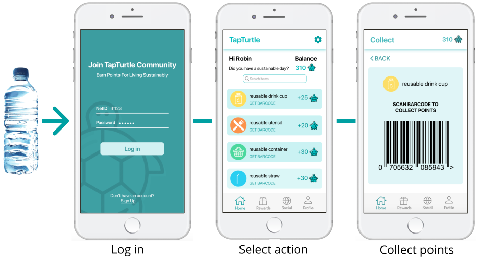
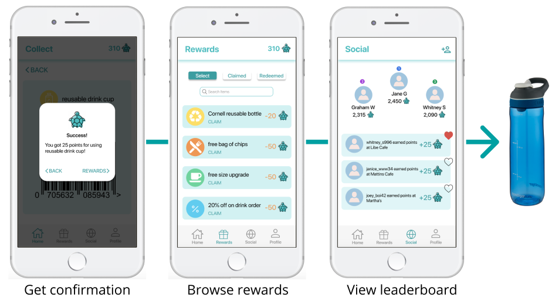

TapTurtle: Cultivating Sustainability Through a Mobile App
 PROBLEM
Cornell undergraduate students who live off-campus frequently utilize single-use plastics. These students often do not have a meal plan, so they cook for themselves and eat out. It is easy to buy groceries/meals pre-packaged in plastic and convenient to reach for plastic utensils at a cafe, but these habits produce large amounts of single-use plastic waste, which are extremely harmful to the environment.
REQUIREMENTS
• Work with three peers on a semester-long Human-Computer Interaction (HCI) project
• Follow the UX design process to come up with a technological solution, completing individual and group assignments for each step
- Identify a problem and potential users
- Research the problem space and user group
- Generate a prototype
- Conduct usability testing
• Present the final solution at a poster session with 150+ attendees
SOLUTION OVERVIEW
• A rewards app where students earn points for engaging in sustainable behaviors at on-campus eateries
• Points can be redeemed for reusable items and discounts at campus cafes
• Social support is fostered through a social feed where users can see the actions of others, along with a leaderboard for top users
PROCESS
Research
We interviewed 10 people who fit our user group, asking about their typical day to gain a sense of their habits. We asked questions about what they believed to be prevalent on-campus issues, whether they bought or cooked lunch, where they shopped for groceries, and if they consider themsleves to be environmentall conscious. One person in our group facilitated the interview while another team member took notes.
We organized our interview notes into an affinity diagram with six categories: Eating Habits, Living Habits, Convenience, Awareness, Attitudes, and On-Campus.
Snapshot of two categories
We found three main takeaways:
• Our user group considers their actions ineffective, feeling powerless with regard to environmental initiatives.
• All options for buying food on-campus and close to campus come in disposable - usually plastic - containers.
• Our user groups tends to prioritize convenience over sustainable habits.
We then explored the solutions space through online research. As a group, we scrutinized 20 existing products and noted their strengths and weaknesses.
Prototyping
After becoming familar with the solution space, we began to brainstorm our mobile app. We made lo-fidelity wireframes using Balsamiq.
Punchcard Screen
Home and Profile Screen
Leaderboard Screen
We conducted short usability tests on our lo-fidelity prototype to identify pain points in the user journey. We made four main changes when moving from the lo-fidelity to the high-fidelity Figma prototype:
• Removed punchcard screen. Users instead collect points on the home screen.
• Added back buttons and shortcuts for ease of use.
• Changed nav bar icons and labelled them for clarity.
• Narrowed reward options to only include discounts and items redeemable in-person .
Usability Testing
We greeted the participant, and asked for their name and major. We then described the app and our motivation behind it, explaining that the app encourages students to partake in sustainable behaviors in on-campus eateries. We said that we would ask the participant to perform four tasks on our prototype and that they can stop the usability test if they feel uncomfortable. After this introduction, we provided an informed consent form for the participant to look over. Once it was signed, we asked the participant to complete the following: earn points, use points to redeem a reward, refer a friend to the app, and like someone’s in-app status/action.
After the tasks were complete, we asked the participant to describe their overall experience with TapTurtle. We also asked the participant to describe the app in their own words, and to explain what they liked most and least about the app. Then, we asked the participant if they had any questions and answered them, if any. We concluded the session by thanking the participant for their time and telling them to reach out if they had any additional questions.